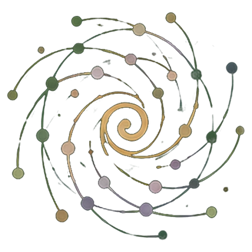
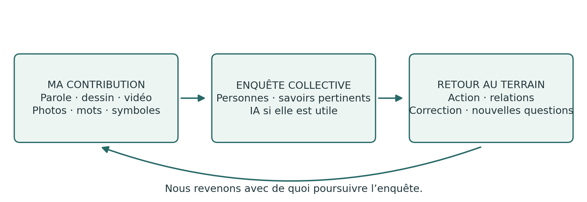
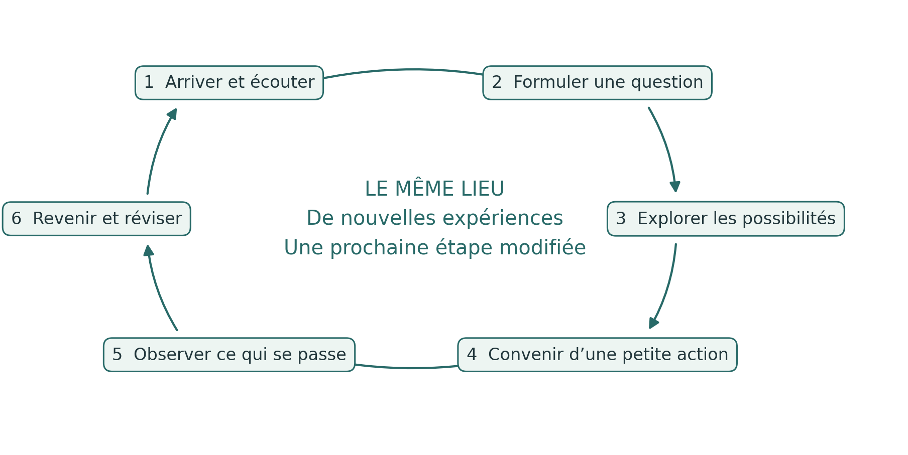
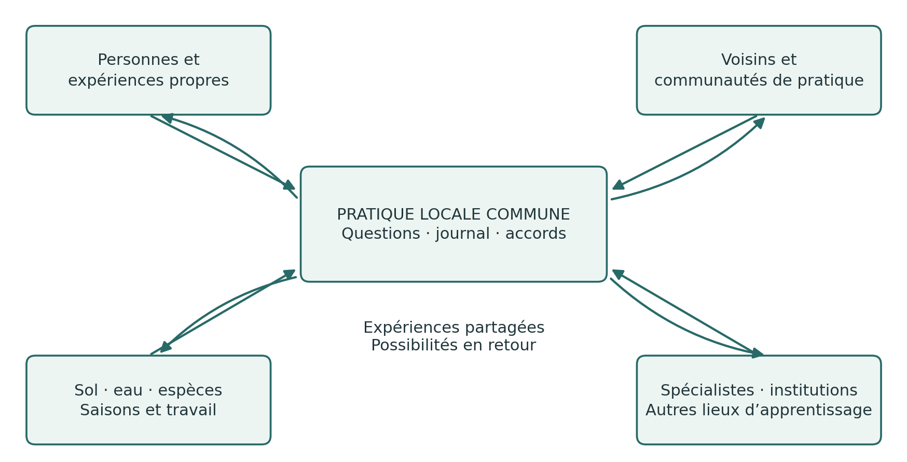
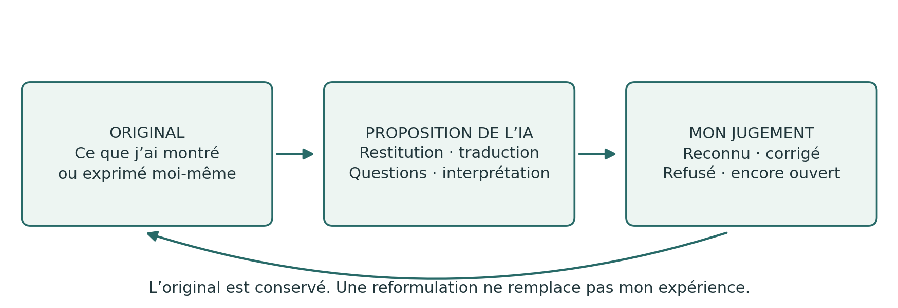

Le Journal du TerrainDe l’expérience personnelle à la capacité d’agir ensemble
Guide pratique des spirales d’apprentissage, du PG Ledger et du dialogue critique avec l’IA
Édition française v1.0 · 24 octobre 2026
Publié par Spiralweb Stewardship Association · Spiralweb Papers
Élaboré dans le cadre du travail sur Learning with Living Places
Le Journal du Terrain est un guide pratique ouvert, publié par Spiralweb Stewardship Association dans Spiralweb Papers. Il part du travail des personnes dans un lieu vivant : quelque chose est remarqué, consigné et étudié ensemble. Une action devient possible, et l’expérience acquise modifie la suite. Le guide relie ce mouvement aux connaissances pertinentes, au dialogue critique avec l’IA et aux ressources qui peuvent soutenir la vie du lieu dans la durée.
Partez d’un élément concret de votre pratique. La parole, le dessin, vos propres symboles, la photographie, la vidéo et l’écriture peuvent garder une trace de l’expérience. Le groupe organise l’accès aux outils et à l’aide nécessaires ; posséder un téléphone n’est pas une condition de participation. Une contribution choisie sert de point de référence pour les comparaisons et corrections ultérieures. Individuellement ou en groupe, nous portons sur l’IA le regard d’un ami critique. L’expérience vient d’abord ; tout ce qui est vécu n’a pas à être consigné.

Une pratique reliée
Le journal accueille vos propres traces de l’expérience. L’enquête collective relie des contributions choisies à une question. Le PG Ledger conserve la mémoire convenue des actions, décisions, ressources et suites observées. La spirale d’apprentissage est ce retour par lequel l’expérience peut modifier la compréhension et la pratique. Les pages suivantes présentent d’abord une enquête complète, puis en expliquent les différentes fonctions.
Le guide réunit une application pratique de Healthy Roots, du PG Ledger et de l’autorité humaine dans le travail avec l’IA. Le site spiralweb.earth présente l’Association et ses relations ancrées dans les lieux. Le site papers.spiralweb.earth rassemble textes, protocoles et outils. Ce matériel peut être utilisé sans partenariat avec l’Association. Vos expériences peuvent aussi conduire à proposer des modifications des outils communs.
Utilisez le guide de manière autonome et adaptez-le localement. Suivez l’introduction, partez d’une question actuelle ou consultez les formats selon les besoins. Personne n’a à remplir toutes les fiches. Le sommaire est cliquable ; les liens associés aux notions donnent accès aux textes de référence. Les fiches reproductibles suivent le texte principal.
Le Journal du Terrain · v1.0 1 / 27
Sommaire et outils pratiques
Commencez par une enquête complète et par la distinction entre journal et ledger. Le texte principal occupe les pages 3 à 13. Les fiches pour vos propres contributions se trouvent aux pages 14 à 16. Lorsque le groupe a besoin d’une mémoire commune, choisissez parmi les formats des pages 17 à 26.
03 Une enquête de la première observation au retour
04 Journal, enquête collective et PG Ledger
05 Les six mouvements de la spirale d’apprentissage
06 Une expérience dont l’origine est claire
07 Évaluations, inconnu et éléments non consignés
08 Des contributions personnelles à une question commune
09 Adopter une posture d’ami critique face à l’IA
10 Des activités d’apprentissage avec un objectif clair
11 Organiser le travail dans le temps
12 Stewardship economy et possibilités communes
13 Mémoire commune, responsabilité et vérification
14 Fiche pour ma propre contribution
15 Fiche pour un essai et un retour
16 Fiche pour le dialogue avec l’IA et le partage choisi
17 Quand le groupe a besoin d’une mémoire commune et Format 1
23 Format 4 Mémoire des décisions
25 Format 5 Traces financières
27 Pour aller plus loin et conditions d’utilisation
Qui utilise quoi ? Le journal et les fiches d’appui sont à la disposition de tous. L’observation et l’action, formats 2 et 3, soutiennent l’enquête du groupe. Les formats 1, 4 et 5 servent à l’évaluation collective, aux décisions et au suivi financier. Les personnes dont la responsabilité a été convenue tiennent et valident les enregistrements ; toute personne concernée doit pouvoir poser des questions et apporter des corrections.
Personne n’a à remplir toutes les fiches. Un champ peut rester vide et ne doit pas être rempli par supposition. Choisissez les modes d’expression et la quantité de documentation qu’exige la tâche.
Le Journal du Terrain · v1.0 2 / 27
Une enquête de la première observation au retour
Cet exemple montre comment journal, conversation, outils et action peuvent fonctionner ensemble. Il propose une démarche à essayer et ne relate pas une activité déjà réalisée.
Quelque chose est remarqué
Une cultivatrice filme une zone de sol sec et explique dans sa langue ce qu’elle a remarqué. Une autre personne dessine une zone qui semble plus humide. Chacune garde sa contribution dans son journal avec une référence simple. À ce stade, les observations et les explications possibles diffèrent.
Une question commune prend forme
Lors d’une rencontre, les personnes présentent les contributions qu’elles ont choisies. Le groupe compare les expériences et décide d’étudier la couverture du sol. Il explique son choix et garde d’autres questions pour plus tard. L’IA peut aider à reformuler les contributions et à proposer des explications pertinentes. Les personnes les vérifient et corrigent les passages injustifiés de l’observation à l’affirmation.
Une action est convenue
Le groupe définit un petit essai, précise les autorisations nécessaires et convient du temps, des responsabilités, des matériaux et de la prochaine visite. La fiche d’action garde la trace de l’accord. Une référence peut relier une contribution du journal à la mémoire commune sans la réécrire.
Le travail nécessaire à l’essai devient visible
Un voisin propose des résidus de taille. L’équipe vérifie s’ils conviennent et organise le transport ainsi que les soins à poursuivre. Elle constate qu’une personne porterait sinon une charge excessive entre les rencontres. La question s’élargit : comment assurer durablement les soins nécessaires ? Une décision et une dépense effective sont consignées dans leurs formats respectifs.
Le terrain et le groupe apportent une réponse
Lors de la visite suivante pertinente, les nouvelles observations sont comparées au point de départ. L’IA a suggéré une baisse de la consommation d’eau, mais celle-ci n’a pas été mesurée. Le groupe corrige le texte et examine ce qu’il peut affirmer. Peut-être le transport a-t-il demandé trop de travail, ou d’autres conditions expliquent-elles la différence. L’essai et la répartition du travail sont modifiés.
L’expérience ouvre une nouvelle possibilité
Le groupe peut maintenant solliciter un conseiller ou une ferme-école pour étudier une question mieux définie. Un nouvel accord peut donner accès à des matériaux, à un apprentissage ou à une rémunération pour le suivi nécessaire. En revenant à l’enquête, le groupe examine ce qui est effectivement devenu possible. La compréhension commune est mieux étayée, même si des désaccords et des incertitudes subsistent.
Cette démarche peut durer plusieurs journées de travail ou une saison. Une meilleure question, une pause nécessaire ou une décision argumentée de ne pas poursuivre peuvent constituer un résultat important de ce retour à l’enquête.
Le Journal du Terrain · v1.0 3 / 27
Journal, enquête collective et PG Ledger
Le journal et le ledger conservent différentes dimensions d’une même pratique. Le journal permet de remarquer et d’explorer. Le ledger relie des éléments choisis à la mémoire commune nécessaire à la responsabilité et au suivi. La spirale d’apprentissage est le mouvement dans le temps ; ce n’est pas un document supplémentaire.
Élément | Fonction | Exemple concret |
|---|---|---|
Mon journal | Mes observations, questions, essais et réflexions, dans les supports de mon choix. | Une vidéo de l’écoulement de l’eau, accompagnée de mon explication. |
Enquête collective | Conversation, comparaison et confrontation aux connaissances pertinentes autour d’une question choisie. | Nous cherchons pourquoi l’eau s’accumule ici. |
PG Ledger | Une mémoire convenue et rectifiable des fondements du travail, des responsabilités, des ressources et des conséquences ultérieures. | L’observation est reliée à une action et à une visite ultérieure. |
Cinq formats opérationnels | Des outils pour des situations précises au sein de la mémoire commune. | Une fiche consigne une action ; une autre, une dépense. |
Retour | L’expérience peut modifier la compréhension, les accords et les étapes suivantes. | Après la pluie, nous réexaminons l’essai et le modifions. |
Quand un élément du journal devient pertinent pour le ledger
Lorsque le groupe a une raison précise de retrouver une contribution et de la relier au travail commun, il convient de la partie à intégrer, des droits d’accès et des possibilités de correction. Une référence à l’original peut suffire. Les éléments personnels ne deviennent pas automatiquement collectifs, et le journal entier n’a jamais à être intégré.
Ce qui fait du ledger une mémoire vivante
Une fiche isolée est un enregistrement. Des enregistrements reliés deviennent une mémoire utile lorsque leurs liens, leurs sources et leurs responsabilités sont traçables. Le PG Ledger prend vie par le retour : les personnes examinent ce qui s’est produit ensuite et laissent les résultats modifier la suite. Cinq fiches remplies ne suffisent pas à établir cette pratique.
Un journal personnel peut rester indépendant. Le travail commun peut aussi commencer avec un système local de consignation existant ou une conversation. L’expérience compte avant d’être consignée ; remplir une fiche n’est pas une condition pour être entendu. Ce qui importe, c’est le lien entre expérience, accord, action et correction.
Le Journal du Terrain · v1.0 4 / 27
Les six mouvements de la spirale d’apprentissage
L’apprentissage naît de retours successifs à une question, à ses conséquences pratiques et aux expériences d’autres personnes. Un tour de spirale peut durer une conversation, plusieurs journées de travail ou une saison. L’enchaînement donne une orientation ; le rythme et les retours suivent les besoins de l’enquête.

1. Arriver et écouter. Qui est présent, qu’y a-t-il ici et quelles expériences apportons-nous ?
2. Formuler ensemble une question. Que voulons-nous comprendre ou changer ?
3. Explorer les explications et les possibilités. Quelles interprétations et autres voies faut-il examiner ?
4. Rendre une action possible. Qu’allons-nous essayer, avec quelles ressources et responsabilités ?
5. Prendre connaissance de ce qui se passe réellement. Qu’observons-nous, y compris ce qui nous surprend ?
6. Revenir et laisser l’expérience modifier la démarche. Que faut-il poursuivre, changer ou arrêter ?
Une hypothèse provisoire relie les étapes du travail
Une working wager, ou hypothèse de travail, énonce ce que le groupe attend et ce qui pourrait l’amener à revoir sa compréhension. Elle relie la question à l’action, à l’apprentissage, aux ressources et à l’évaluation ultérieure. Par exemple : une couverture du sol devrait retenir l’humidité si le matériau convient et si le travail peut être assuré dans la durée. Examinez l’état des plantes, les autres explications et la charge de travail réelle.
Le Journal du Terrain · v1.0 5 / 27
Une expérience dont l’origine est claire
Un journal de terrain personnel peut être tenu sur papier, en audio, en images ou en vidéo. Chaque personne choisit son mode d’expression. Le journal commun du terrain conserve les contributions choisies et les accords utiles. Les différences entre les contributions restent visibles. Un hôte, un employeur ou un animateur ne peut pas parler à la place d’autrui de son expérience.
L’observation avant la synthèse
Partez de ce qu’une personne remarque, fait ou souhaite montrer. Associez une date, un lieu et une source aux éléments qu’il faudra retrouver. Une référence peut être B01 : première visite, [date], [lieu] ; les photos et l’audio peuvent être nommés B01-photo et B01-audio. Le groupe choisit son propre système et protège les lieux et les identités sensibles.
« Trois plantes ont les feuilles jaunes » est une observation. « Je pense qu’elles manquent d’eau » est une interprétation. L’expérience constitue déjà un savoir que la répétition, la mesure et d’autres expériences peuvent corriger. Un enregistrement conserve la contribution ; il ne prouve pas à lui seul l’explication.
Aide à l’expression et confirmation
Lorsqu’une personne aide à écrire, traduire ou enregistrer, les mots et le sens de la personne concernée sont préservés. Le compte rendu lui est présenté pour qu’elle le corrige ou le confirme. Lorsque la documentation importe, l’aide et la traduction reçues sont indiquées. L’original est conservé lorsqu’une explication change. Une correction orale a la même valeur qu’une correction écrite et doit pouvoir modifier le travail.
Maîtrise personnelle et appareils partagés
La conservation personnelle, l’accès du groupe, le traitement par l’IA et la publication font l’objet de choix distincts, avec des finalités et des destinataires précisés. Certains éléments peuvent ne pas être consignés. Les informations nécessaires concernant les finances et la sécurité sont définies et expliquées séparément.
Par défaut, ne partagez pas d’images permettant d’identifier des enfants. Toute exception exige de clarifier au préalable les règles applicables, d’obtenir les consentements parentaux ou du représentant légal nécessaires et de prendre en compte l’avis de l’enfant selon son âge et sa maturité. Sa vie privée et sa sécurité priment.
Convenez des responsabilités, des accès, du stockage, de la synchronisation et de la suppression des copies sur les appareils partagés. Assurez la conservation d’une copie convenue avant toute suppression. Avant un traitement par un service d’IA externe, précisez ce qui sera envoyé ainsi que les conditions de conservation et de réutilisation du service. N’envoyez que les éléments choisis et nécessaires.
Le temps fait partie de la tâche
Dans Learning with Living Places, l’observation, le travail de journal et l’interprétation collective convenus font partie du temps d’apprentissage et de travail rémunéré. Les contributions supplémentaires sont volontaires. Les autres groupes conviennent d’une charge réaliste. La documentation doit soutenir le travail et être simplifiée lorsqu’elle devient une charge.
Le Journal du Terrain · v1.0 6 / 27
Évaluations, inconnu et éléments non consignés
Une évaluation porte sur une situation précise à un moment donné. Une décision de consignation porte sur ce qui sera conservé ou non. Ce sont deux questions différentes.
Les feux de couleur expriment un jugement humain argumenté
Indication | Signification pour l’étape suivante |
|---|---|
Vert | Les éléments disponibles permettent une petite étape suivante dans le cadre du mandat convenu. |
Jaune | La situation demande de l’attention, des ajustements et une nouvelle évaluation. |
Rouge | Une protection, une pause ou une réparation est nécessaire. |
Inconnu | Les éléments sont insuffisants pour évaluer la situation. Cela ne signifie pas jaune. |
Évaluez séparément le lieu vivant, la capacité des personnes à poursuivre et la gouvernance commune. Conservez la date, les fondements et l’incertitude ; ne calculez pas de couleur moyenne. Le vert dans un domaine ne compense pas le rouge dans un autre. Lorsque des personnes sont épuisées, arrêtez ou réduisez le travail qui dépend d’elles ; les soins nécessaires et une transmission responsable peuvent continuer.
Inconnu, non pertinent et délibérément omis sont distincts
Inconnu : la question est pertinente, mais nous n’en savons pas encore assez. Non pertinent : la question ne s’applique pas à cette enquête. Délibérément omis : un élément n’est pas consigné ou intégré à ce matériel. Cela ne dit rien de la situation concernée. Un champ vide n’a pas de sens univoque ; ni les personnes ni l’IA ne peuvent en deviner le sens.
Le droit de ne pas consigner quelque chose
Une question peut être abordée par une observation, une expérience personnelle ou un vécu auquel on tient, sans qu’il soit écrit ni enregistré. Chaque personne choisit ce qu’elle garde. Il appartient à chacun d’offrir ou non son expérience intérieure. Les savoirs collectifs protégés relèvent des droits et des accords des personnes concernées.
Il n’est pas non plus obligatoire d’indiquer qu’un élément a été délibérément omis. Révéler son existence peut déjà être sensible. Le silence n’exige aucune explication et n’autorise pas à combler le vide. Les informations nécessaires convenues concernant les finances, la sécurité et la responsabilité commune sont définies séparément ; elles ne donnent pas accès à l’ensemble du journal personnel.
Par exemple, l’humidité du sol peut être inconnue parce qu’elle n’a pas été suffisamment étudiée. Une question sur un cours d’eau peut ne pas concerner cette planche de culture. Un enregistrement privé peut rester en dehors du matériel commun sans y être mentionné.
Textes de référence : Knowing From the Ground · Moral Biology
Le Journal du Terrain · v1.0 7 / 27
Des contributions personnelles à une question commune
Un AnchorPoint soutient dans la durée les liens locaux entre personnes, lieux, savoirs, accords et ressources. L’enquête collective peut se dérouler en présence et se poursuivre par les relations et en ligne. Une représentation commune ne crée pas à elle seule une autorité partagée ; les droits de décision doivent être convenus.

Un début commun simple
Chaque personne peut proposer une contribution choisie, ou choisir de ne pas partager. Le groupe examine les ressemblances et les différences et retient une question en expliquant son choix. Il tient compte de l’intérêt, de l’importance, du temps et de la faisabilité. D’autres questions sont conservées pour un retour ultérieur. Le compte rendu doit laisser visibles les désaccords sur le choix et les voix qui n’ont pas été entendues.
Lorsque la question dépasse le groupe
Convenez des personnes à contacter, de la question à poser, des éléments partageables et de la personne qui rapportera la réponse. Les conseils, les analyses de laboratoire, le dialogue institutionnel ou le contact avec d’autres cultivateurs sont examinés avec les expériences initiales. Une réponse extérieure n’oriente l’action suivante qu’après un examen local approprié et un accord. C’est le bottom-linking en pratique.
Les liens biorégionaux
Suivez les conditions dont dépend la question : eau, sol, espèces, semences, alimentation, travail et décisions institutionnelles. Cartes et calendriers saisonniers peuvent révéler des liens au-delà des limites de propriété et de projet. Les voix différentes et les méthodes professionnelles peuvent se corriger mutuellement. Ce qui se passe réellement sur le terrain peut contredire chacune de nos explications.
Le Journal du Terrain · v1.0 8 / 27
Adopter une posture d’ami critique face à l’IA
Individuellement ou en groupe, nous portons sur l’IA le regard d’un ami critique : ouverts à ses apports, attentifs aux erreurs, aux surinterprétations et aux glissements de sens. L’IA peut soutenir l’expression, la traduction, le travail sur les sources et la comparaison. Ses contributions deviennent utiles à l’enquête grâce à l’examen humain et à l’épreuve de la pratique.

Vérifier le compte rendu avant de l’interpréter
L’IA reçoit d’abord une tâche limitée et les éléments choisis pour cette tâche. Avec une photo ou un enregistrement, vérifiez sa restitution avant de poursuivre. Les mots, images et traductions ambigus restent signalés comme tels. Si l’aide linguistique ou technique est insuffisante, faites appel à une personne compétente.
Une consigne pour commencer
Décris d’abord ce que tu peux réellement lire, entendre ou voir dans le matériel choisi. Signale les incertitudes et attends ma correction. Distingue mon observation, mon explication et tes suggestions. Ne remplis pas les champs vides. Garde distincts « inconnu », « non pertinent » et « délibérément omis » lorsqu’ils sont indiqués. Ne déduis rien du silence et ne tente pas de reconstituer un contenu omis. Ensuite seulement, propose d’autres explications et des moyens de les examiner. N’invente aucune information ni aucune source.
Demandez ensuite : quelles affirmations viennent de mon matériel ? Qu’a ajouté l’IA ? Quelles sources peut-on vérifier ? L’incertitude et les désaccords ont-ils été conservés ? Qu’est-ce qui nécessite une nouvelle observation ou l’avis d’un spécialiste ? L’IA peut aussi omettre une possibilité pertinente ; sa réponse ne fixe pas les limites de l’enquête.
Last Impulse en pratique
La personne concernée peut comprendre, corriger, refuser et arrêter un compte rendu ou une action ; elle assume sa responsabilité dans les limites de son mandat. Le silence ne vaut pas approbation. Un accord sur une formulation n’autorise ni la publication ni l’action pratique.
Par exemple, « Le sol semblait plus frais » devient « La consommation d’eau a diminué » dans le texte de l’IA. La personne relève ce saut, corrige le compte rendu et décide de l’enquête nécessaire. L’original, la contribution de l’IA et la correction offrent une base concrète pour examiner l’IA en juste relation.
Le Journal du Terrain · v1.0 9 / 27
Des activités d’apprentissage avec un objectif clair
Une activité d’apprentissage permet de développer une compétence ou une compréhension précise. Il peut s’agir d’une courte conversation, d’une visite de terrain, d’un essai, d’une démonstration ou d’une tâche entre les rencontres. Le journal peut accueillir des traces de cette expérience. Utilisez un format opérationnel lorsqu’un besoin précis de mémoire commune se présente.
Activité | Ce que l’on apprend à faire | Éléments possibles |
|---|---|---|
Remarquer et décrire | Distinguer une observation de son explication possible. | Un dessin, des mots, une photo ou un enregistrement personnel. |
Comparer des lieux ou des moments | Examiner les ressemblances, les différences et les conditions de comparaison. | Deux observations dont le contexte est précisé. |
Examiner les contributions de l’IA | Reconnaître, corriger et questionner un compte rendu remanié. | L’original, la proposition de l’IA et la correction humaine. |
Choisir et agir ensemble | Expliquer un choix et préciser les pouvoirs de décision, les ressources et le suivi. | Une question commune et un accord dont le périmètre est défini. |
Chercher des savoirs ou du soutien | Exprimer un besoin et évaluer une réponse reçue. | Une demande et un apport utile en retour. |
Montrer une pratique à d’autres | Expliquer et montrer ce qui a été appris, en laissant place aux questions. | Une démonstration ou une contribution choisie à l’apprentissage. |
Six questions pour préparer l’activité
Objectif : que doit permettre d’apprendre cette activité ?
Point de départ : de quelle expérience ou de quels éléments partons-nous ?
Action : que ferons-nous exactement, avec quelle aide et dans quel délai ?
Conversation : qu’examinons-nous ensemble, et sur quoi pourrions-nous être en désaccord ?
Mémoire : que vaut-il la peine de conserver, par qui et sous quelle forme ?
Retour : quand et comment reprendrons-nous cette expérience ?
Les tâches convenues font partie du temps d’apprentissage et de travail rémunéré du programme. Aucune remise quotidienne du journal personnel n’est attendue. Une activité réussit lorsqu’elle ouvre un apprentissage et une action pertinents ; la quantité de documentation n’est pas un objectif en soi.
Le Journal du Terrain · v1.0 10 / 27
Organiser le travail dans le temps
Rythme et continuité de l’enquête
Une journée peut commencer par ce que le groupe souhaite observer et se terminer par ce qui demande un suivi. Le groupe revient à son enquête en lien avec les actions, les saisons et les décisions concrètes. Il convient d’un rythme de bilan collectif qui relie questions, ressources et expériences sans multiplier inutilement les documents.
Les cinq axes d’apprentissage sont : sol, eau et lieu ; systèmes alimentaires et habitats ; stewardship economy ; coopération et institutions ; transmission et échanges. Une question peut relier plusieurs axes. Ceux-ci aident à ouvrir l’enquête et à révéler des relations négligées. Laissez aussi la place à une démonstration technique, à une exploration ou au partage d’une découverte sans exiger d’enregistrement.
Un exemple avec deux parcelles d’apprentissage
Dans une ferme, deux parcelles sont préparées pour des essais de culture différents. L’équipe décrit leurs conditions initiales à partir de ses observations et d’investigations spécialisées pertinentes. Elle choisit une question, par exemple sur la couverture du sol et l’eau, convient d’un petit essai et consigne aussi les matériaux et le temps de travail. Une ferme-école ou un conseiller intervient si cela aide l’enquête. Lors de la visite suivante pertinente, l’équipe examine le déroulement et la prochaine étape.
Phase | Travail commun | Base pour la phase suivante |
|---|---|---|
Préparation | Les program stewards, responsables de l’accompagnement du programme, essaient la méthode et clarifient les langues, l’accès, les rôles et la sécurité. | Une proposition initiale mise à l’essai et des accords clairs |
Démarrage | Le groupe essaie différents modes d’expression de l’expérience et contribue au choix des questions. | Des questions locales et des outils adaptés |
Enquête | Travail pratique, observation, dialogue éclairé et essais limités. | Des expériences, des corrections et des décisions |
Échanges | Des éléments choisis sont mis en discussion avec d’autres personnes pertinentes. | Des réponses utiles et de nouveaux liens |
Poursuite | L’apprentissage, le matériel, les ressources et les responsabilités sont réexaminés. | Une transmission convenue et des étapes réalistes |
Préparation et soin
Prévoyez du temps pour préparer les outils avant l’arrivée du groupe. Convenez de l’organisation pratique, du matériel, de la sécurité et des compétences nécessaires avant d’agir. Observer n’autorise pas un contact risqué avec l’eau, le sol, les plantes ou les installations. Les tâches convenues sont financées, ou leur périmètre est limité explicitement. L’évolution écologique et la coopération peuvent se poursuivre au-delà d’une subvention sans être financées par celle-ci.
Le Journal du Terrain · v1.0 11 / 27
Stewardship economy et possibilités communes
La stewardship economy, une économie de la responsabilité envers le vivant, étudie comment le travail, les savoirs, les ressources et la responsabilité peuvent soutenir les conditions du vivant dont dépendent les personnes et les sociétés. La rémunération peut protéger le temps et la capacité de poursuivre ; elle n’exprime pas toute la valeur d’une personne ou d’un lieu. L’enquête relie les pratiques de culture aux relations et aux conditions institutionnelles qui permettent de prendre soin dans la durée.
L’abondance désigne à la fois la créativité humaine et les possibilités que la coopération peut ouvrir. La question est concrète : qu’y a-t-il déjà ici, que peut-on développer et à quoi pouvons-nous accéder ensemble ? Il peut s’agir de matériaux, de conseils, de compétences, d’argent, d’accès ou d’aide pour le travail. La rareté et les coûts nécessaires restent visibles.
Question du terrain | Lien possible | Apport possible en retour |
|---|---|---|
Comment le sol retient-il l’humidité ? | Des voisins disposant de matériaux excédentaires adaptés | Une couverture du sol et un accord sur le transport |
Comment améliorer le sol ? | Des personnes connaissant le compostage et des éleveurs | Du compost ou du fumier adapté, avec des conseils |
Comment multiplier les plantes ? | Un groupe d’échange de semences ou une ferme-école | Des graines, des boutures et des savoir-faire de multiplication |
Comment améliorer l’irrigation ? | Des cultivateurs et des conseils techniques | Un essai, une réparation ou un budget |
Comment expliquer ces dégâts ? | Un spécialiste du domaine | Une évaluation et une prochaine étape sûre |
Comment partager l’expérience ? | D’autres cultivateurs et groupes d’apprentissage | Une démonstration ou un support pédagogique |
Comment financer l’étape suivante ? | Une proposition du groupe et un dialogue | Une demande précise, étayée par des éléments et des prix |
Qui peut assurer le travail ? | Un examen collectif des tâches | Un relais et une transmission des responsabilités |
Suivre l’apport jusque dans la pratique
Distinguez une idée, un contact, un accord, une contribution reçue et un effet réel. Vérifiez l’adéquation de l’apport, la sécurité, le transport, le temps de travail, la propriété et la responsabilité ultérieure. Un don possible n’est pas une ressource déjà reçue. Gardez la trace des offres pertinentes refusées et du travail invisible lorsque cela est possible dans les limites convenues.
The Steward’s Journey décrit plusieurs façons de s’engager dans le travail, sans séquence imposée. Une personne peut explorer son propre lieu, échanger avec d’autres ou conclure un accord limité pour un essai. Le soutien nécessite un accord spécifique ; il ne se mérite pas en franchissant des étapes prescrites. La transmission entre pairs et la recherche de financements peuvent se développer là où les personnes le souhaitent et le peuvent.
Le Journal du Terrain · v1.0 12 / 27
Mémoire commune, responsabilité et vérification
Le PG Ledger relie des observations choisies aux actions, décisions, ressources et conséquences ultérieures. Utilisez les formats selon la tâche. Réutilisez les originaux et les références ; ne réécrivez pas les mêmes éléments en plusieurs vérités parallèles.
Format opérationnel | Fonction |
|---|---|
Observation | Conserve l’observation, son origine, son contexte et ses incertitudes. |
Action délimitée | Définit jusqu’à trois actions que le groupe peut assurer, avec une responsabilité, une possibilité d’arrêt et un retour. |
Mémoire des décisions | Conserve le raisonnement, le mandat, les désaccords importants et les changements ultérieurs. |
Traces financières | Relie un flux financier, sa finalité, les justificatifs et une observation ultérieure. La comptabilité formelle est tenue séparément. |
Évaluation collective | Garde distinctes les évaluations du lieu et du vivant, de la capacité des personnes à poursuivre et de la gouvernance des communs. Pas de note globale. |
Des accords applicables
Le groupe convient des responsables des tâches, des relais, des pouvoirs de décision, du traitement des désaccords et des moments de bilan collectif. Le financement et l’enquête locale sont reliés par des objectifs et des responsabilités clairs. Personne n’approuve ses propres paiements ni ne traite une plainte qui le concerne. Une voie de contact indépendante est connue et accessible.
Les personnes qui le souhaitent peuvent développer la transmission entre pairs ou de nouvelles communautés d’apprentissage et définir leurs propres objectifs. L’organisation commune doit permettre à la fois la continuité et la rotation et rendre visibles le soin, la traduction et la coordination. Les contributions bénévoles ne servent pas à masquer des fonctions nécessaires sans financement.
Vérifier si la méthode fonctionne
À partir d’enquêtes réelles, examinez si chaque personne peut reconnaître et corriger sa contribution, questionner l’IA, influer sur une question commune et mobiliser l’expérience lors d’un retour. Conservez les contributions utiles et trompeuses de l’IA avec la correction humaine. Cela permet d’étudier l’apprentissage et l’usage de l’IA sans confondre aisance rédactionnelle et apprentissage. Vérifiez aussi si le matériel est facile à aborder, si les symboles sont compris et si une correction modifie réellement la suite du travail.
Suivez aussi l’évolution du terrain, de la charge de travail et des possibilités réelles de décision. Une amélioration écologique ne compense ni l’épuisement ni le non-respect des droits. Une situation inconnue ou un choix de ne pas consigner ne sont pas des signes d’échec. L’expérience peut corriger la boîte à outils, la recherche et le protocole. Évaluez les bénéfices de l’IA en tenant compte du temps de vérification, de traduction et du travail éventuellement reporté sur d’autres.
Le Journal du Terrain · v1.0 13 / 27
Fiche pour ma propre contribution
Utilisez dessins, symboles, mots, photos, audio ou vidéo. Cette fiche est facultative ; vous pouvez renvoyer à un original choisi. Une expérience n’a pas à être consignée pour compter dans la conversation.
Date ou moment __________________ Lieu __________________
Mon signe ou ma référence __________________
Ce que je remarque ou souhaite montrer
Ce que je me demande
________________________________________________________________________
________________________________________________________________________
Ce que cela m’évoque ou ce que je sais par expérience
________________________________________________________________________
________________________________________________________________________
Si j’utilise un enregistrement ou une photo, sa référence est __________________
Si quelqu’un m’a aidé à conserver ma contribution __________________
Ce sont mes propres éléments. Je choisis ce que je conserve et partage. Un champ vide n’exige aucune explication. Le partage est convenu pour une contribution et une finalité précises.
Le Journal du Terrain · v1.0 14 / 27
Fiche pour un essai et un retour
Un appui facultatif à la conversation et au retour. Renvoyez aux formats opérationnels pertinents plutôt que de répéter les informations. Distinguez inconnu, non pertinent et omis lorsqu’ils sont indiqués ; un champ vide n’exige aucune explication.
Lieu __________________ Date __________________ Référence __________________
Notre question et notre attente provisoire
________________________________________________________________________
________________________________________________________________________
Ce que nous allons essayer et ce qui pourrait modifier notre compréhension
________________________________________________________________________
________________________________________________________________________
Qui fait quoi, avec quelles ressources et autorisations
________________________________________________________________________
________________________________________________________________________
Quand nous reviendrons et ce qui nous ferait arrêter
________________________________________________________________________
Retour daté : ce qui s’est réellement passé
________________________________________________________________________
________________________________________________________________________
Ce que nous modifions ou continuons à comprendre différemment
________________________________________________________________________
________________________________________________________________________
Renvoyez à une observation, une décision ou une dépense si cela est utile. Un effet attendu n’est pas un résultat observé.
Le Journal du Terrain · v1.0 15 / 27
Fiche pour le dialogue avec l’IA et le partage choisi
Individuellement ou ensemble, nous sommes des amis critiques de l’IA. Gardez distincts l’original, le compte rendu remanié et la correction. L’IA ne doit ni remplir les champs vides, ni interpréter le silence, ni reconstituer les contenus omis.
Date __________________ Référence de mon matériel __________________
Service d’IA ou autre aide, le cas échéant __________________
L’aide précise que j’ai demandée
________________________________________________________________________
Ce que l’IA a reformulé ou proposé
________________________________________________________________________
________________________________________________________________________
Ce que je reconnais, corrige, refuse ou ne sais pas encore
________________________________________________________________________
________________________________________________________________________
________________________________________________________________________
Ce que nous allons explorer ou faire, individuellement ou ensemble
________________________________________________________________________
________________________________________________________________________
Si je choisis de partager quelque chose
Contribution choisie __________________
Avec qui __________________ Pour quelle finalité __________________
Envoi à un service d’IA autorisé __________________
Publication autorisée et sous quelle forme __________________
Traitement de ma correction ou d’un changement de ma décision de partage __________________
Un accord de partage ne couvre que ce qui a été convenu. Précisez les limites éventuelles de suppression ou de retrait avant toute transmission. Mon accord ne couvre pas automatiquement les droits d’une autre personne.
Le Journal du Terrain · v1.0 16 / 27
Quand le groupe a besoin d’une mémoire commune
Format 1 Évaluation collective
Choisissez parmi les cinq formats selon la tâche. Chacun peut contribuer, poser des questions et apporter des corrections. Convenez de la personne qui tient la fiche et de celle qui peut valider une évaluation, une décision ou un enregistrement financier. Personne n’a à remplir les cinq formats.
PG Ledger Format 1 · Steward Review Dashboard · Adaptation dans ce guide
Édition source v1.4.2 · 18 octobre 2026 ·
https://papers.spiralweb.earth/formats/format1-dashboard
Lorsque le groupe doit évaluer s’il peut poursuivre pendant la période suivante, ce format aide à garder les trois dimensions distinctes.
Lors d’un retour convenu à l’enquête, évaluez séparément le lieu vivant, la capacité des personnes à poursuivre et la gouvernance commune. Le jugement revient aux personnes disposant des connaissances et de l’autorité pertinentes. Il ne s’agit ni d’une mesure ni d’une note globale.
Un exemple tiré de la même enquête
Lieu et vivant
La surface est partiellement couverte. L’humidité a été évaluée lors d’une seule visite ; les raisons des différences restent incertaines. Évaluation : inconnu.
Capacité des personnes à poursuivre
Les heures convenues ont été utilisées, mais le transport prend plus de temps que prévu. Évaluation : jaune ; un nouvel accord est nécessaire.
Gouvernance commune
Le mandat et les responsables sont connus ; l’autorisation de partager un enregistrement n’est pas établie. Celui-ci n’est pas encore partagé.
Utilisation et liens
Cet exemple ne justifie aucune couleur globale. Inconnu signifie que les éléments sont insuffisants pour évaluer, et non jaune. Le groupe convient de la période suivante dans un périmètre défini et conserve les désaccords importants. Il est possible de ne pas consigner un élément ; cette omission n’est pas une évaluation de la situation.
La fiche du guide figure à la page suivante. Il s’agit d’une adaptation qui conserve la fonction essentielle du format. Le lien donne accès au format source complet et à sa version actuelle. Les champs peuvent renvoyer à une contribution orale, un dessin ou un enregistrement.
Le Journal du Terrain · v1.0 17 / 27
Format 1 Fiche
PG Ledger Format 1 · Steward Review Dashboard · Adaptation dans ce guide
Édition source v1.4.2 · 18 octobre 2026 ·
https://papers.spiralweb.earth/formats/format1-dashboard
Lieu ou relation __________________ Date ou période __________________
Source et responsabilité __________________ Référence et accès __________________
Objet de l’évaluation __________________ Contributions de __________________
Lorsqu’une évaluation est convenue, choisissez vert, jaune, rouge ou inconnu. Sinon, laissez le champ vide.
Lieu et vivant : fondements, interprétation et incertitude
________________________________________________________________________
________________________________________________________________________
Capacité des personnes à poursuivre : fondements, interprétation et incertitude
________________________________________________________________________
________________________________________________________________________
Gouvernance commune : fondements, interprétation et incertitude
________________________________________________________________________
________________________________________________________________________
Désaccord, prochaine étape limitée, responsabilité et retour
________________________________________________________________________
________________________________________________________________________
Pas de couleur moyenne. Le vert peut permettre une petite étape suivante ; le jaune appelle un ajustement ; le rouge appelle une protection, une pause ou une réparation. Inconnu signifie que les éléments sont insuffisants. Un champ vide ne contient aucune évaluation et ne doit pas être rempli par supposition.
Le Journal du Terrain · v1.0 18 / 27
Format 2 Observation
PG Ledger Format 2 · Observation Sheet · Adaptation dans ce guide
Édition source v1.3.2 · 18 octobre 2026 ·
https://papers.spiralweb.earth/formats/format2-observation
Lorsqu’une observation doit pouvoir être retrouvée et comparée, ce format aide à en conserver les fondements.
Utilisez-le lorsqu’un élément d’un lieu, d’une visite ou d’un événement mérite d’être conservé. Décrivez d’abord ce qui a été remarqué et comment l’observation a été faite. Les huit entrées liées au terrain sont des points de départ possibles qui peuvent être adaptés ou omis.
Un exemple tiré de la même enquête
Observation
Lors de la visite B01, la surface semble sèche au toucher en deux endroits. Trois plantes ont les feuilles jaunes. B01-photo et B01-audio renvoient aux contributions originales conservées par la personne. Le système B01 est expliqué dans la section sur les sources.
Explication provisoire
Le manque d’eau est une possibilité. Le sol, les espèces, les arrosages précédents et les autres conditions n’ont pas été suffisamment examinés.
Prochaine clarification
Le groupe confronte l’observation à l’historique des arrosages et convient d’une comparaison plus rigoureuse.
Utilisation et liens
Non observé ne signifie pas absent. L’identification possible d’une espèce demande vérification. Gardez le lieu, le moment, l’effort d’observation et l’incertitude.
La fiche du guide figure à la page suivante. Il s’agit d’une adaptation qui conserve la fonction essentielle du format. Le lien donne accès au format source complet et à sa version actuelle. Les champs peuvent renvoyer à une contribution orale, un dessin ou un enregistrement.
Le Journal du Terrain · v1.0 19 / 27
Format 2 Fiche
PG Ledger Format 2 · Observation Sheet · Adaptation dans ce guide
Édition source v1.3.2 · 18 octobre 2026 ·
https://papers.spiralweb.earth/formats/format2-observation
Lieu ou relation __________________ Date ou période __________________
Source et responsabilité __________________ Référence et accès __________________
Moment, durée, météo et méthode __________________
Adaptez les entrées. Inconnu signifie que les éléments sont insuffisants ; non pertinent signifie que l’élément ne relève pas de la question. Un élément peut aussi être omis sans explication.
Surface et couverture du sol __________________________________________________
Structure de la végétation __________________________________________________
Circulation de l’eau __________________________________________________
Changement et succession __________________________________________________
Espèces et signes de vie __________________________________________________
Signes observés dans le sol __________________________________________________
Circulation de matière organique __________________________________________________
Mon expérience du rythme du travail, ou celle qu’une autre personne choisit de partager __________________________
Expérience personnelle et savoirs locaux, avec leurs sources
________________________________________________________________________
Interprétation, source ou enregistrement, et éléments inconnus
________________________________________________________________________
________________________________________________________________________
Le Journal du Terrain · v1.0 20 / 27
Format 3 Action délimitée
PG Ledger Format 3 · Bounded Action Sheet · Adaptation dans ce guide
Édition source v1.3 · août 2026 ·
https://papers.spiralweb.earth/formats/format3-action
Lorsque le groupe est prêt à convenir d’une action, ce format aide à préciser les responsabilités, les limites et le suivi.
Utilisez-le pour une petite action que les personnes responsables peuvent réellement comprendre, assurer et arrêter. Convenez de son objectif, du mandat, des conditions concernées et du retour. L’action peut aussi consister à chercher une aide spécialisée ou à attendre une clarification nécessaire.
Un exemple tiré de la même enquête
Action
Essayer une couverture du sol adaptée sur une petite surface convenue et garder une zone de comparaison si cela est pertinent pour l’enquête.
Responsabilité et périmètre
La personne désignée par l’équipe obtient les autorisations nécessaires et précise les matériaux, la sécurité et le temps de travail.
Arrêt et retour
N’épandez pas de matériau inconnu. Arrêtez si un risque reste non résolu ou si les limites convenues sont dépassées. Convenez de la prochaine visite avant de commencer l’essai.
Utilisation et liens
Limitez-vous à trois actions simultanées compatibles avec les capacités des personnes et les conditions du lieu. Une action plus petite n’est pas automatiquement sans danger.
La fiche du guide figure à la page suivante. Il s’agit d’une adaptation qui conserve la fonction essentielle du format. Le lien donne accès au format source complet et à sa version actuelle. Les champs peuvent renvoyer à une contribution orale, un dessin ou un enregistrement.
Le Journal du Terrain · v1.0 21 / 27
Format 3 Fiche
PG Ledger Format 3 · Bounded Action Sheet · Adaptation dans ce guide
Édition source v1.3 · août 2026 ·
https://papers.spiralweb.earth/formats/format3-action
Lieu ou relation __________________ Date ou période __________________
Source et responsabilité __________________ Référence et accès __________________
Fondements, objectif et autorisation nécessaire
________________________________________________________________________
________________________________________________________________________
Action — trois au maximum | Responsable | Échéance |
|---|---|---|
1 __________________ | ________________ | ____________ |
2 __________________ | ________________ | ____________ |
3 __________________ | ________________ | ____________ |
Conditions concernées, sécurité, limites et possibilités de réparation
________________________________________________________________________
________________________________________________________________________
Qui peut arrêter et ce qui ne doit pas encore commencer
________________________________________________________________________
________________________________________________________________________
Ce que nous suivons et quand nous revenons
________________________________________________________________________
________________________________________________________________________
Le Journal du Terrain · v1.0 22 / 27
Format 4 Mémoire des décisions
PG Ledger Format 4 · Governance / Decision Log · Adaptation dans ce guide
Édition source v1.3.2 · 18 octobre 2026 ·
https://papers.spiralweb.earth/formats/format4-decision
Lorsqu’une décision doit pouvoir être expliquée et réexaminée, ce format aide à en préserver les fondements.
Utilisez-le lorsqu’une décision, un changement de rôle, une exception, une pause ou un arrêt doit pouvoir être retrouvé et discuté. La fiche conserve les fondements de la décision au moment où elle a été prise. Les expériences ultérieures sont ajoutées avec une date ; elles ne réécrivent pas le passé.
Un exemple tiré de la même enquête
Décision
Le groupe modifie la tâche de transport et réduit le périmètre de l’essai dans les limites de son mandat.
Raisonnement et désaccord
Le transport a pris plus de temps que prévu. Une personne préférait reporter entièrement l’essai. Ce point de vue est conservé.
Autorité et correction
La personne habilitée à décider confirme le changement. L’approbation budgétaire et la mise en œuvre pratique suivent leurs propres accords. La décision est réexaminée après la prochaine livraison.
Utilisation et liens
La fiche consigne l’autorité et le raisonnement ; elle ne crée aucun mandat. L’IA peut aider à rédiger un compte rendu, tandis que les personnes examinent et approuvent la version concernée.
La fiche du guide figure à la page suivante. Il s’agit d’une adaptation qui conserve la fonction essentielle du format. Le lien donne accès au format source complet et à sa version actuelle. Les champs peuvent renvoyer à une contribution orale, un dessin ou un enregistrement.
Le Journal du Terrain · v1.0 23 / 27
Format 4 Fiche
PG Ledger Format 4 · Governance / Decision Log · Adaptation dans ce guide
Édition source v1.3.2 · 18 octobre 2026 ·
https://papers.spiralweb.earth/formats/format4-decision
Lieu ou relation __________________ Date ou période __________________
Source et responsabilité __________________ Référence et accès __________________
Décision, objectif et date d’effet
________________________________________________________________________
Fondements, incertitude et solutions envisagées
________________________________________________________________________
________________________________________________________________________
Pouvoir de décision, mandat et éventuel conflit d’intérêts
________________________________________________________________________
Personnes concernées, entendues, absentes ou en désaccord, et limites du consentement
________________________________________________________________________
________________________________________________________________________
Contribution de l’IA et vérification humaine, le cas échéant
________________________________________________________________________
Responsabilité, retour et conditions de modification ou d’arrêt
________________________________________________________________________
________________________________________________________________________
Le Journal du Terrain · v1.0 24 / 27
Format 5 Traces financières
PG Ledger Format 5 · Financial Ledger Sheet · Adaptation dans ce guide
Édition source v1.3.1 · 17 octobre 2026 ·
https://papers.spiralweb.earth/formats/format5-financial-ledger
Lorsqu’un mouvement d’argent a réellement lieu, ce format aide à le relier à sa finalité et à son utilisation ultérieure.
Utilisez-le pour un flux financier convenu, en le reliant à sa finalité, aux justificatifs et à un retour ultérieur. L’enregistrement complète la comptabilité formelle. Les apports matériels et le temps bénévole peuvent être référencés séparément sans inventer de valeur monétaire.
Un exemple tiré de la même enquête
Flux financier
Une prestation de transport convenue est enregistré au moment où il a lieu, avec le montant réel, la devise, la date, le payeur, le destinataire et la référence du justificatif.
Finalité et classification
Transport d’un matériau adapté à la couverture du sol pour l’essai. La personne responsable des finances confirme la qualification juridique du paiement à partir de l’accord et des justificatifs. Cette qualification ne peut pas être déduite d’une notion de valeur.
Retour ultérieur
Après la livraison, consignez ce qui est effectivement arrivé et a été utilisé, par qui et avec quels points en suspens. L’effet attendu sur le sol reste une hypothèse.
Utilisation et liens
Distinguez dépense et effet. Le groupe peut proposer A/B/C selon la finalité de la ressource ; la personne responsable des finances vérifie la classification. Ces codes n’indiquent ni une couleur ni un état satisfaisant. Les classifications non résolues restent des questions.
La fiche du guide figure à la page suivante. Il s’agit d’une adaptation qui conserve la fonction essentielle du format. Le lien donne accès au format source complet et à sa version actuelle. Les champs peuvent renvoyer à une contribution orale, un dessin ou un enregistrement.
Le Journal du Terrain · v1.0 25 / 27
Format 5 Fiche
PG Ledger Format 5 · Financial Ledger Sheet · Adaptation dans ce guide
Édition source v1.3.1 · 17 octobre 2026 ·
https://papers.spiralweb.earth/formats/format5-financial-ledger
Lieu ou relation __________________ Date ou période __________________
Source et responsabilité __________________ Référence et accès __________________
Devise de référence __________________ Vérifié par __________________
A : lieu et écologie · B : capacité des personnes à poursuivre · C : coordination et gouvernance.
Montant, devise, taux de change et date
________________________________________________________________________
Payeur, destinataire, moyen de paiement et justificatifs
________________________________________________________________________
Qualification juridique et référence de la ressource
À remplir par la personne responsable des finances, sur la base de l’accord et des justificatifs. A/B/C indique la finalité ; la même personne vérifie la classification. Signalez les points non résolus comme des questions.
________________________________________________________________________
Accès, consentement et vérification de l’enregistrement
________________________________________________________________________
Retour observé ultérieurement
Date, source, utilisation réelle et documentation
________________________________________________________________________
________________________________________________________________________
Incertitude, correction et prochain examen
________________________________________________________________________
________________________________________________________________________
Consignez un flux à la fois. La comptabilité formelle et les approbations restent dans les systèmes autorisés. Une intention n’est pas un résultat.
Le Journal du Terrain · v1.0 26 / 27
Pour aller plus loin et conditions d’utilisation
Papers est un espace public de savoirs dont les publications sont versionnées. Ce guide pratique réunit des modes de travail choisis en une démarche pratique cohérente. Il n’établit aucune nouvelle autorité locale et ne remplace pas les accords particuliers. Cette première édition est ouverte à la critique éclairée et à l’essai local. L’expérience peut modifier le guide comme ses sources.
Healthy Roots
https://papers.spiralweb.earth/protocols/healthy-roots
PG Ledger
https://spiralweb.earth/pg-ledger/
Les cinq formats opérationnels
https://spiralweb.earth/formats/
Sophia Lumen
https://papers.spiralweb.earth/protocols/sophia-lumen
Moral Biology
https://papers.spiralweb.earth/papers/moral-biology
Knowing From the Ground
https://papers.spiralweb.earth/papers/knowing-from-the-ground
GP22 Capacity and Contact
https://papers.spiralweb.earth/papers/capacity-contact-stewardship-economy
GP23 A Decent Economy
https://papers.spiralweb.earth/papers/a-decent-economy-under-the-jurisdiction-of-life
Living Landscapes
https://papers.spiralweb.earth/papers/living-landscapes
The Steward’s Journey
https://papers.spiralweb.earth/papers/srip-the-stewards-journey
Atlas, working wagers et autres Field Papers
https://papers.spiralweb.earth/library
FAO : écoles pratiques d’agriculture (en anglais)
https://www.fao.org/farmer-field-schools/overview/en/
Lawrence Hall of Science : le journal de nature (en anglais)
https://lawrencehallofscience.org/activities/exploring-nature-journaling/
Libre utilisation avec attribution claire
Le texte, les figures et les fiches vierges du guide peuvent être copiés, traduits et adaptés sous licence CC BY 4.0. Attribution : Spiralweb Stewardship Association, Le Journal du Terrain, édition française v1.0, 2026. Indiquez vos modifications. Les cinq formats sont traduits des adaptations danoises des éditions sources précisées pour chaque format.
https://creativecommons.org/licenses/by/4.0/
Les journaux remplis, les données personnelles et les enregistrements ne relèvent pas automatiquement de la licence ouverte. Leur partage fait l’objet d’un accord distinct. Les œuvres externes gardent leurs propres conditions. L’IA a contribué à la préparation ; la responsabilité éditoriale humaine et la correction locale restent essentielles.
Publié par Spiralweb Stewardship Association · Spiralweb Papers
spiralweb.earth · papers.spiralweb.earth
Traduction française de Feltets Dagbog, édition danoise v1.0.1, avec consultation de l’édition anglaise · 24 octobre 2026.
Le Journal du Terrain · v1.0 27 / 27